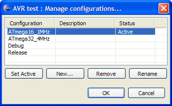
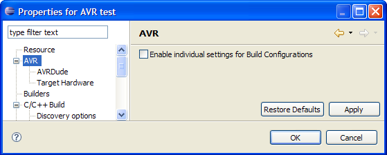
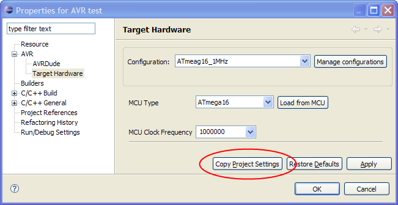

Build configurations is a concept supplied by CDT. The AVR Eclipse Plugin extends this concept a bit to make it a little bit easier to use.
In a nutshell a build configuration is a collection of properties and settings to be used for a project. They include the compiler flags, linker options and other settings to adjust the build process.
Each C/C++ Project has a least one build configuration, but can have an unlimited number of distinct build configurations. Unless changed in the New Project Wizard, each C/C++ project has the two default configurations Debug and Release, which have the compiler flags optimized for debugging and size respectively.
The settings within each build configuration are separate from each other. This is used to compile and build the same source files with different settings with a single click -- without having to modify makefiles or adjusting global settings for each build.
All CDT- and AVR-specific project properties pages have unified controls to handle configurations.
With the Configuration drop down field the available configurations can be selected. All settings below are only applied to the selected configuration.
The Manage configuration button opens a new dialog where configurations can be added, removed or renamed.

Here two new configurations have been added to compile the project either for a 1 MHz ATmega16 or for a 4 MHz ATmega32. The "ATmega16_1MHz" configuration has also been set active. Each C/C++ project has one active configuration. This is the configuration used when the project is build with Build Project, either form the Project main menu or from the project context menu.
The active build configuration can be set from the Manage configurations dialog as seen above, or again via the Project main menu or the project context menu (Build Configurations > Set active > ...). The project context menu also has an option to build all configurations at once (Build Configurations > Build > All).
Version 2.1 of the AVR Eclipse Plugin had only a project-global setting for the target hardware which applied to all build configuration. To keep compatability with 2.1 and also to reduce the number of options for simple projects, the concept of build configurations has been slighly modified with the AVR Eclipse Plugin.
All AVR-specific properties of an AVR project can be either project-global or per build configuration. This is selected on the project properties AVR page:

The default for the Enable individual settings for Build Configurations is off. This means that all AVRDude and Target Hardware settings apply to the project, regardless off the active build configuration. The configuration selector on the AVR property pages is disabled.
Once the Enable individual settings for Build Configurations flag is set, the configuration selector on the AVR property pages is enabled and all changes in the AVR properties will only apply to the selected build configuration.
The plugin remembers the settings for project-global and each build configuration separatly, so the mode can be switched back and forth between project-global and per-config without loosing any settings.
When using the per-configuration mode, the project-global settings are always used as a default for newly created build configurations. The Copy settings from : Existing configuration xxx option on the Create configuration dialog (Manage configurations > New...) does not apply to the AVR properties. This is due to internal reasons as CDT does not know anything about the AVR properties.
On the other hand each AVR property page has a Copy Project Settings button, which will copy the project-global settings for the selected page to the selected build configuration.

All AVR project specific settings are stored in a simple Java properties file named de.innot.avreclipse.core.prefs in the .settings folder of your project. This file may contain options that are not yet implemented in the plugin and should not be edited.
The project-global properties are named avrtarget/[option name] while the per-config properties are named avrtarget/[internal-config-id]/[option name].